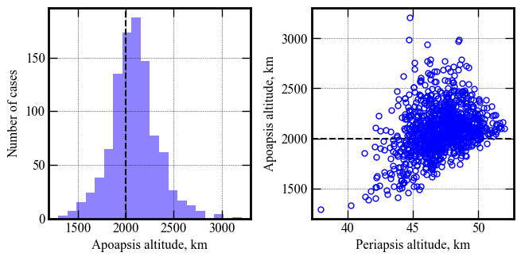
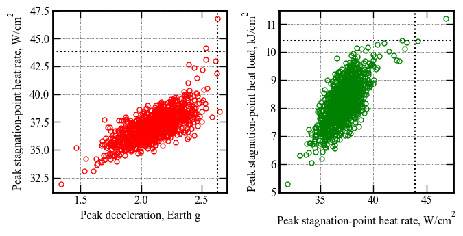
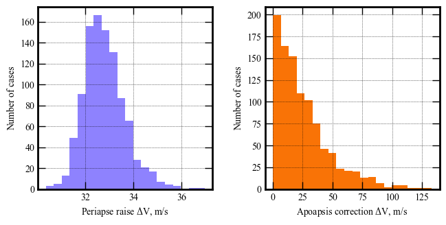

Section 3.7 - Mars SmallSat Aerocapture - Performance Analysis¶
[1]:
from AMAT.planet import Planet
from AMAT.vehicle import Vehicle
[2]:
import numpy as np
from scipy import interpolate
import pandas as pd
import matplotlib.pyplot as plt
from matplotlib import rcParams
from matplotlib.patches import Polygon
Small Run N = 10¶
[3]:
# Set up the planet and atmosphere model.
planet=Planet("MARS")
planet.loadAtmosphereModel('../../../atmdata/Mars/mars-gram-avg.dat', 0 , 1 ,2, 3)
planet.h_skip = 120e3
planet.h_low=10.0E3
# Set up the drag modulation vehicle.
vehicle=Vehicle('MarsSmallSat1', 34, 20, 0.0, np.pi*1.5**2, 0.0, 0.1, planet)
vehicle.setInitialState(120.0, 88.15, -0.71, 5.3586, 9.3778,-9.25, 0.0,0.0)
vehicle.setSolverParams(1E-6)
vehicle.setDragModulationVehicleParams(20, 7.5)
# Set up the drag modulation entry phase guidance parameters.
vehicle.setDragEntryPhaseParams(2.0, 15.0, 101, -200.0)
# Set the target orbit parameters.
vehicle.setTargetOrbitParams(200.0, 2100.0, 20.0)
# Define the path to atmospheric files to be used for the Monte Carlo simulations.
atmfiles = ['../../../atmdata/Mars/LAT00N-N1000.txt']
# Set up the Monte Carlo simulation for drag modulation.
# NPOS = 156, NMONTE = 1000
# Target EFPA = -12.05 deg
# EFPA 1-sigma error = +/- 0.067 deg
# Nominal beta_1 = 66.4 kg/m2
# beta_1 1-sigma = 0.0
# guidance time step for entry = 1.0s (Freq. = 1 Hz)
# guidance time step after jettison = 1.0 s
# max. solver time step = 0.1 s
# max. time used by solver = 2400 s
vehicle.setupMonteCarloSimulationD(156, 1000, atmfiles, 0 , 1, 2, 3, 4, True,
-9.25, 0.0666, 20.0, 0.0,
1.0, 1.0, 0.1, 2400.0)
# Run 200 trajectories
vehicle.runMonteCarloD2(10, '../../../data/acta-astronautica/smallsat-mission-concepts/mars/MCBX1')
BATCH :../../../data/acta-astronautica/smallsat-mission-concepts/mars/MCBX1, RUN #: 1, PROF: ../../../atmdata/Mars/LAT00N-N1000.txt, SAMPLE #: 619, EFPA: -9.27, SIGMA: -0.01, APO : 2000.84
BATCH :../../../data/acta-astronautica/smallsat-mission-concepts/mars/MCBX1, RUN #: 2, PROF: ../../../atmdata/Mars/LAT00N-N1000.txt, SAMPLE #: 254, EFPA: -9.29, SIGMA: -0.68, APO : 2396.54
BATCH :../../../data/acta-astronautica/smallsat-mission-concepts/mars/MCBX1, RUN #: 3, PROF: ../../../atmdata/Mars/LAT00N-N1000.txt, SAMPLE #: 824, EFPA: -9.23, SIGMA: -1.26, APO : 2183.39
BATCH :../../../data/acta-astronautica/smallsat-mission-concepts/mars/MCBX1, RUN #: 4, PROF: ../../../atmdata/Mars/LAT00N-N1000.txt, SAMPLE #: 443, EFPA: -9.32, SIGMA: -0.12, APO : 2457.64
BATCH :../../../data/acta-astronautica/smallsat-mission-concepts/mars/MCBX1, RUN #: 5, PROF: ../../../atmdata/Mars/LAT00N-N1000.txt, SAMPLE #: 690, EFPA: -9.27, SIGMA: -1.36, APO : 1941.79
BATCH :../../../data/acta-astronautica/smallsat-mission-concepts/mars/MCBX1, RUN #: 6, PROF: ../../../atmdata/Mars/LAT00N-N1000.txt, SAMPLE #: 598, EFPA: -9.34, SIGMA: -0.93, APO : 1750.47
BATCH :../../../data/acta-astronautica/smallsat-mission-concepts/mars/MCBX1, RUN #: 7, PROF: ../../../atmdata/Mars/LAT00N-N1000.txt, SAMPLE #: 151, EFPA: -9.25, SIGMA: 0.88, APO : 2464.41
BATCH :../../../data/acta-astronautica/smallsat-mission-concepts/mars/MCBX1, RUN #: 8, PROF: ../../../atmdata/Mars/LAT00N-N1000.txt, SAMPLE #: 861, EFPA: -9.28, SIGMA: -0.43, APO : 2049.09
BATCH :../../../data/acta-astronautica/smallsat-mission-concepts/mars/MCBX1, RUN #: 9, PROF: ../../../atmdata/Mars/LAT00N-N1000.txt, SAMPLE #: 228, EFPA: -9.31, SIGMA: 0.74, APO : 1819.87
BATCH :../../../data/acta-astronautica/smallsat-mission-concepts/mars/MCBX1, RUN #: 10, PROF: ../../../atmdata/Mars/LAT00N-N1000.txt, SAMPLE #: 935, EFPA: -9.14, SIGMA: 0.80, APO : 2062.02
Production Run N = 1000¶
Run the file section-3-7-mars-smallsat-performance-analysis-prd.py
See section-3-7-mars-smallsat-performance-analysis-prd-log.txt for terminal log.
[3]:
p1 = np.loadtxt('../../../data/acta-astronautica/smallsat-mission-concepts/mars/MCB-Mars/terminal_periapsis_arr.txt')
x1 = np.loadtxt('../../../data/acta-astronautica/smallsat-mission-concepts/mars/MCB-Mars/terminal_apoapsis_arr.txt')
y1 = np.loadtxt('../../../data/acta-astronautica/smallsat-mission-concepts/mars/MCB-Mars/acc_net_g_max_arr.txt')
z1 = np.loadtxt('../../../data/acta-astronautica/smallsat-mission-concepts/mars/MCB-Mars/q_stag_max_arr.txt')
h1 = np.loadtxt('../../../data/acta-astronautica/smallsat-mission-concepts/mars/MCB-Mars/heatload_max_arr.txt')
u1 = np.loadtxt('../../../data/acta-astronautica/smallsat-mission-concepts/mars/MCB-Mars/periapsis_raise_DV_arr.txt')
v1 = np.loadtxt('../../../data/acta-astronautica/smallsat-mission-concepts/mars/MCB-Mars/apoapsis_raise_DV_arr.txt')
[16]:
fig, axes = plt.subplots(1, 2, figsize = (6.5, 3.25))
plt.rc('font',family='Times New Roman')
params = {'mathtext.default': 'regular' }
plt.rcParams.update(params)
fig.tight_layout()
plt.subplots_adjust(wspace=0.30)
axes[0].axvline(x=2000, linewidth=1.5, color='k', linestyle='dashed')
axes[0].hist(x1, bins=20, color='xkcd:periwinkle')
axes[0].set_xlabel('Apoapsis altitude, km', fontsize=12)
axes[0].set_ylabel('Number of cases', fontsize=12)
axes[0].tick_params(direction='in')
axes[0].yaxis.set_ticks_position('both')
axes[0].xaxis.set_ticks_position('both')
axes[0].tick_params(axis='x',labelsize=12)
axes[0].tick_params(axis='y',labelsize=12)
axes[1].axhline(y=2000, linewidth=1.5, color='k', linestyle='dashed')
axes[1].plot(p1, x1, 'bo', markersize=5, mfc='None')
axes[1].set_xlabel('Periapsis altitude, km',fontsize=12)
axes[1].set_ylabel('Apoapsis altitude, km', fontsize=12)
axes[1].tick_params(direction='in')
axes[1].yaxis.set_ticks_position('both')
axes[1].xaxis.set_ticks_position('both')
axes[1].tick_params(axis='x',labelsize=12)
axes[1].tick_params(axis='y',labelsize=12)
for ax in axes:
ax.xaxis.set_tick_params(direction='in', which='both')
ax.yaxis.set_tick_params(direction='in', which='both')
ax.xaxis.set_tick_params(width=1, length=8)
ax.yaxis.set_tick_params(width=1, length=8)
ax.xaxis.set_tick_params(width=1, length=6, which='minor')
ax.yaxis.set_tick_params(width=1, length=6, which='minor')
ax.xaxis.grid(which='major', color='k', linestyle='dotted', linewidth=0.5)
ax.xaxis.grid(which='minor', color='k', linestyle='dotted', linewidth=0.0)
ax.yaxis.grid(which='major', color='k', linestyle='dotted', linewidth=0.5)
ax.yaxis.grid(which='minor', color='k', linestyle='dotted', linewidth=0.0)
for axis in ['top', 'bottom', 'left', 'right']:
ax.spines[axis].set_linewidth(2)
plt.savefig('../../../data/acta-astronautica/smallsat-mission-concepts/mars/mars-smallsat-apoapsis-vs-periapsis.png', dpi= 300,bbox_inches='tight')
plt.savefig('../../../data/acta-astronautica/smallsat-mission-concepts/mars/mars-smallsat-apoapsis-vs-periapsis.pdf', dpi=300,bbox_inches='tight')
plt.savefig('../../../data/acta-astronautica/smallsat-mission-concepts/mars/mars-smallsat-apoapsis-vs-periapsis.eps', dpi=300,bbox_inches='tight')
plt.show()

[8]:
# Remove some anomalies in heat load
del_index1 = np.where(h1 < 0.5)
del_index1
h1[del_index1]
[8]:
array([0.00240509, 0.01801673, 0.00028386, 0. , 0.00016607,
0.00317211, 0.00251472, 0.00230238, 0.00065365, 0.0011202 ,
0.00260518, 0. , 0.00404422, 0.01778235, 0. ])
[9]:
y1 = np.delete(y1, del_index1 )
z1 = np.delete(z1, del_index1 )
h1 = np.delete(h1, del_index1 )
[17]:
fig, axes = plt.subplots(1, 2, figsize = (6.5, 3.25))
plt.rc('font',family='Times New Roman')
params = {'mathtext.default': 'regular' }
plt.rcParams.update(params)
fig.tight_layout()
plt.subplots_adjust(wspace=0.30)
axes[0].plot(y1, z1, 'ro', markersize=5, mfc='None')
axes[0].set_xlabel('Peak deceleration, Earth g', fontsize=12)
axes[0].set_ylabel('Peak stagnation-point heat rate, '+r'$W/cm^2$', fontsize=12)
axes[0].tick_params(direction='in')
axes[0].yaxis.set_ticks_position('both')
axes[0].xaxis.set_ticks_position('both')
axes[0].tick_params(axis='x',labelsize=12)
axes[0].tick_params(axis='y',labelsize=12)
axes[0].axhline(y=np.percentile(z1, 99.87), linewidth=1.5, color='k', linestyle='dotted')
axes[0].axvline(x=np.percentile(y1, 99.87), linewidth=1.5, color='k', linestyle='dotted')
axes[1].plot(z1, h1, 'go', markersize=5, mfc='None')
axes[1].set_xlabel('Peak stagnation-point heat rate, '+r'$W/cm^2$', fontsize=12)
axes[1].set_ylabel('Peak stagnation-point heat load, '+r'$kJ/cm^2$', fontsize=12)
axes[1].tick_params(direction='in')
axes[1].yaxis.set_ticks_position('both')
axes[1].xaxis.set_ticks_position('both')
axes[1].tick_params(axis='x',labelsize=12)
axes[1].tick_params(axis='y',labelsize=12)
axes[1].axhline(y=np.percentile(h1, 99.87), linewidth=1.5, color='k', linestyle='dotted')
axes[1].axvline(x=np.percentile(z1, 99.87), linewidth=1.5, color='k', linestyle='dotted')
for ax in axes:
ax.xaxis.set_tick_params(direction='in', which='both')
ax.yaxis.set_tick_params(direction='in', which='both')
ax.xaxis.set_tick_params(width=1, length=8)
ax.yaxis.set_tick_params(width=1, length=8)
ax.xaxis.set_tick_params(width=1, length=6, which='minor')
ax.yaxis.set_tick_params(width=1, length=6, which='minor')
ax.xaxis.grid(which='major', color='k', linestyle='dotted', linewidth=0.5)
ax.xaxis.grid(which='minor', color='k', linestyle='dotted', linewidth=0.0)
ax.yaxis.grid(which='major', color='k', linestyle='dotted', linewidth=0.5)
ax.yaxis.grid(which='minor', color='k', linestyle='dotted', linewidth=0.0)
for axis in ['top', 'bottom', 'left', 'right']:
ax.spines[axis].set_linewidth(2)
plt.savefig('../../../data/acta-astronautica/smallsat-mission-concepts/mars/mars-smallsat-g-load-heat-rate.png', dpi= 300,bbox_inches='tight')
plt.savefig('../../../data/acta-astronautica/smallsat-mission-concepts/mars/mars-smallsat-g-load-heat-rate.pdf', dpi=300,bbox_inches='tight')
plt.savefig('../../../data/acta-astronautica/smallsat-mission-concepts/mars/mars-smallsat-g-load-heat-rate.eps', dpi=300,bbox_inches='tight')
plt.show()

[14]:
fig, axes = plt.subplots(1, 2, figsize = (6.5, 3.25))
plt.rc('font',family='Times New Roman')
params = {'mathtext.default': 'regular' }
plt.rcParams.update(params)
fig.tight_layout()
plt.subplots_adjust(wspace=0.30)
axes[0].hist(u1, bins=20, color='xkcd:periwinkle')
axes[0].set_xlabel('Periapse raise '+r'$\Delta V$'+', m/s', fontsize=10)
axes[0].set_ylabel('Number of cases', fontsize=10)
axes[0].tick_params(direction='in')
axes[0].yaxis.set_ticks_position('both')
axes[0].xaxis.set_ticks_position('both')
axes[0].tick_params(axis='x',labelsize=10)
axes[0].tick_params(axis='y',labelsize=10)
axes[1].hist(np.abs(v1), bins=20, color='xkcd:orange')
axes[1].set_xlabel('Apoapsis correction '+r'$\Delta V$'+', m/s', fontsize=10)
axes[1].set_ylabel('Number of cases', fontsize=10)
axes[1].tick_params(direction='in')
axes[1].yaxis.set_ticks_position('both')
axes[1].xaxis.set_ticks_position('both')
axes[1].tick_params(axis='x',labelsize=10)
axes[1].tick_params(axis='y',labelsize=10)
for ax in axes:
ax.xaxis.set_tick_params(direction='in', which='both')
ax.yaxis.set_tick_params(direction='in', which='both')
ax.xaxis.set_tick_params(width=1, length=8)
ax.yaxis.set_tick_params(width=1, length=8)
ax.xaxis.set_tick_params(width=1, length=6, which='minor')
ax.yaxis.set_tick_params(width=1, length=6, which='minor')
ax.xaxis.grid(which='major', color='k', linestyle='dotted', linewidth=0.5)
ax.xaxis.grid(which='minor', color='k', linestyle='dotted', linewidth=0.0)
ax.yaxis.grid(which='major', color='k', linestyle='dotted', linewidth=0.5)
ax.yaxis.grid(which='minor', color='k', linestyle='dotted', linewidth=0.0)
for axis in ['top', 'bottom', 'left', 'right']:
ax.spines[axis].set_linewidth(2)
plt.show()

[18]:
def percent_between(a, lower, upper, closed_left=True, closed_right=True):
"""
Finds the percentage of values between a range for a numpy array
Parameters
----------
a: np.ndarray
numpy array to calculate percentage
lower: int, float
lower bound
upper: int, float
upper bound
closed_left:
closed left bound ( > vs >= )
closed_right:
closed right bound ( < vs <= )
"""
l = np.greater if not closed_left else np.greater_equal
r = np.less if not closed_right else np.less_equal
c = l(a, lower) & r(a, upper)
return np.count_nonzero(c) / float(a.size)
[22]:
percent_between(x1, 1600, 2400)
[22]:
0.881
[23]:
percent_between(x1, 1400, 2600)
[23]:
0.968
[24]:
percent_between(x1, 1200, 2800)
[24]:
0.995
[25]:
percent_between(x1, 1000, 3000)
[25]:
0.999
[30]:
print("--------------------------------------------------------------------------------------------------------")
print("Parameter | Min. 0.13-percentile Mean 99.87-percentile Max")
print("--------------------------------------------------------------------------------------------------------")
print("Apoapsis altitude, km | " + str(round(np.min(x1))) + " " + str(round(np.percentile(x1, 0.13))) +\
" " + str(round(np.average(x1))) +
" " + str(round(np.percentile(x1, 99.87)))+\
" " + str(round(np.max(x1))))
print("Periapsis altitude, km | " + str(round(np.min(p1), 1)) + " " + str(round(np.percentile(p1, 0.13), 1)) +\
" " + str(round(np.average(p1), 1)) +
" " + str(round(np.percentile(p1, 99.87), 1))+\
" " + str(round(np.max(p1), 1)))
print("Peak deceleration, g | " + str(round(np.min(y1), 2)) + " " + str(round(np.percentile(y1, 0.13), 2)) +\
" " + str(round(np.average(y1), 2)) +
" " + str(round(np.percentile(y1, 99.87), 2))+\
" " + str(round(np.max(y1), 2)))
print("Peak heat rate, W/cm2 | " + str(round(np.min(z1))) + " " + str(round(np.percentile(z1, 0.13))) +\
" " + str(round(np.average(z1))) +
" " + str(round(np.percentile(z1, 99.87)))+\
" " + str(round(np.max(z1))))
print("Peak heat load, kJ/cm2 | " + str(round(np.min(h1),1)) + " " + str(round(np.percentile(h1, 0.13), 1)) +\
" " + str(round(np.average(h1), 1)) +
" " + str(round(np.percentile(h1, 99.87), 1))+\
" " + str(round(np.max(h1), 1)))
print("Periapsis raise dV, m/s| " + str(round(np.min(u1), 1)) + " " + str(round(np.percentile(u1, 0.13), 1)) +\
" " + str(round(np.average(u1), 1)) +
" " + str(round(np.percentile(u1, 99.87), 1))+\
" " + str(round(np.max(u1), 1)))
print("Apoapsis corr. dV, m/s | " + str(round(np.min(v1), 2)) + " " + str(round(np.percentile(v1, 0.13), 2)) +\
" " + str(round(np.average(v1), 2)) +
" " + str(round(np.percentile(v1, 99.87), 2))+\
" " + str(round(np.max(v1), 2)))
--------------------------------------------------------------------------------------------------------
Parameter | Min. 0.13-percentile Mean 99.87-percentile Max
--------------------------------------------------------------------------------------------------------
Apoapsis altitude, km | 1295 1350 2086 2989 3210
Periapsis altitude, km | 38.0 40.6 47.1 51.8 52.0
Peak deceleration, g | 1.34 1.48 2.11 2.63 2.64
Peak heat rate, W/cm2 | 32 33 37 44 47
Peak heat load, kJ/cm2 | 5.3 6.1 8.2 10.4 11.2
Periapsis raise dV, m/s| 30.4 30.5 32.8 36.2 37.0
Apoapsis corr. dV, m/s | -132.92 -109.14 2.98 113.52 122.85